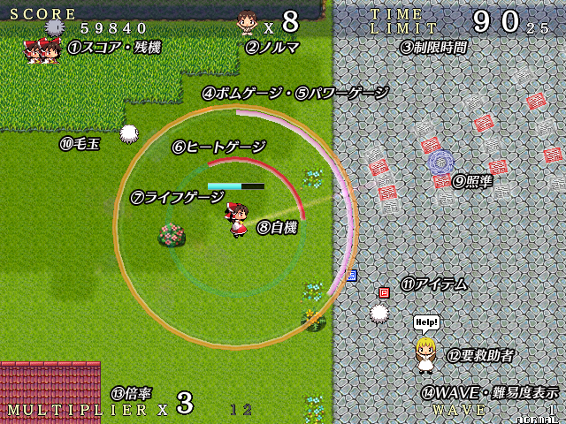

画面説明

- スコア・残機 …… 獲得した点数を表示。下のキャラのアイコンの数が残機を表します。
- ノルマ …… 救助ステージでは要救助者の残り人数。ターゲット破壊ステージでは破壊すべきターゲットの残り数。
- 制限時間 …… ステージの残り時間。0になる前にWAVEをクリアする必要があります。
- ボムゲージ …… 3本あるリングゲージの最外周にあるオレンジのゲージ。ボムのチャージ状況を示し、満タンのときボムが撃てます。
- パワーゲージ …… ボムゲージのすぐ内側のピンクのゲージ。Pアイテムを集めると増えます。満タンになるとショットがしばらく強くなります。
- ヒートゲージ …… パワーゲージのさらに内側の赤いゲージ。ダッシュを連発すると増え、満タンになるとゲージが空になるまでダッシュができません。時間経過で減ります。
- ライフゲージ …… 自機のすぐ上にあるゲージ。敵や敵弾に当たると減り、空っぽになるとミス。
ライフが満タンのときは表示されません。 - 自機 …… あなたが操る自機。
- 照準 …… プレイヤーのショットを撃つ方向を指示します。
- 毛玉 …… わらわら沸いてきてあなたを邪魔します。倒すべき相手。
- アイテム …… いくつか種類があります。毛玉を倒すなどで出現。集めるといいことがあります。
- 要救助者 …… 里の方々。救出が目的のステージではこの人たちを全員助けるのが目的です。女性だけでなく男性、あとご老人もいらっしゃいます。
- 倍率 …… 獲得スコアにかかる倍率。敵を倒していると倍率があがります。最大16倍。ミスで1倍に戻されます。隣の黒い数字は「次の倍率ＵＰまでに必要な毛玉撃破数」です。
- ＷＡＶＥ・難易度表示 …… 現在のＷＡＶＥと、プレイ中の難易度を表示しています。